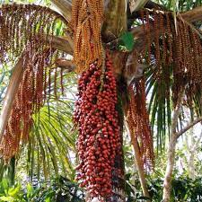

Buríti
.jpg)
Ao termo buriti é a designação comum das plantas dos gêneros Mauritia, Mauritiella, Trithrinax e Astrocaryum, da família das arecáceas (antigas palmáceas). No Rio Grande do Sul o buriti nomina especificamente Trithrinax brasiliensis, uma espécie de palmeira raríssima que só existe neste estado da federação.
No entanto, em outros lugares, o termo buriti costuma se referir a Mauritia flexuosa, uma palmeira muito alta, nativa de Trinidad e Tobago e das Regiões Central e Norte da América do Sul, especialmente de Venezuela e Brasil. Neste país, predomina nos estados do Acre, Amapá, Roraima, Rondônia, Amazonas, Pará, Maranhão, Tocantins e Piauí, mas também encontra-se nos estados do Ceará, Bahia, Goiás, Minas Gerais, Mato Grosso, Mato Grosso do Sul, Rio de Janeiro, São Paulo e no Distrito Federal. É também conhecida como coqueiro-buriti, buritizeiro, miriti, muriti, muritim, muruti, palmeira-dos-brejos, carandá-guaçu e carandaí-guaçu
Óleo do fruto do buriti

O óleo vegetal de buriti tem a propriedade de manter a pele revitalizada através das suas propriedades energizadoras e emolientes. Além disso, o óleo de buriti possui um eficiente filtro solar que diminui o ressecamento da pele e também possui propriedades que proporcionam elasticidade para a pele e combate o envelhecimento. É um bom agente que proporciona hidratação capilar e proteção contra os raios solares para cabelos danificados por este. Atua como um bom produto para cabelos ressecados e quebradiços.
Utilização
Seu fruto, além de rico em vitamina A, B e C, ainda fornece cálcio, ferro e proteínas. Consumido tradicionalmente ao natural, o fruto do buriti também pode ser transformado em doces, sucos, picolé, licor, vinho, sobremesas de paladar peculiar e ração de animais. O óleo extraído da fruta é rico em caroteno e tem valor medicinal para os povos tradicionais do Cerrado que o utilizam como vermífugo, cicatrizante e energético natural. Também é utilizado para amaciar e envernizar couro, colorir e aromatizar diversos produtos de beleza, como cremes, xampus, filtro solar e sabonetes.
Outros usos
O buriti fornece, ainda, palmito saboroso, fécula, seiva e madeira. As folhas jovens produzem uma fibra muito fina, a "seda" do buriti, usada pelos artesãos na fabricação de peças de capim-dourado. Na região dos Lençóis Maranhenses nos municípios de Barreirinhas e Paulino Neves o artesanato feito por mulheres em vários povoados.
A folha jovem, conhecida como "olho do buriti" ou "linho do buriti", possui uma fibra, que é transformada no artesanato de bolsas, tapetes, toalhas de mesa, brinquedos, bijuterias, redes, cobertura de teto, cordas etc. O talo das folhas se presta ainda à fabricação de móveis, que se destacam pela leveza e durabilidade. O caule e as flores são utilizadas na fabricação do vinho de buriti. A madeira é utilizada na construção do instrumento musical viola de buriti. Além disso, a seiva da palmeira de buriti é açucarada sendo possível extrair sacarose cristalizada.
Importância ecológica
O buriti é de grande importância na manutenção de olhos d'água. Em locais em que olhos d'água estão secando, recomenda-se o plantio de buritis, além do de ingazeiros e sangra-d'água, entre outras árvores, para recuperá-los.